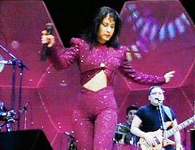

Su primer Grammy
Palaras de Selena
"Me gustaría agradecer a la compañía, al presidente de EMI Latin, José Behar, por hacer esta noche posible y tener fe en nosotros, poniendo la fe en nosotros hace cuatro años. "También me gustaría agradecer a mi banda, Los Dinos, a mi padre Abraham, mi hermano, quien es el productor de mi música y también a mi hermana, gracias por todo el apoyo. "Y me gustaría agradecer también a toda la familia EMI Latin, gracias por tenerme fe, los quiero, gracias".
Primer Grammy de Selena Su álbum Live! de 1993 ganó un Grammy por mejor álbum de música mexicano-estadounidense, convirtiéndose así en la primera artista de estilo musical tejano en ganar uno.


Su primer novela
Dos muejeres y un camino
Selena tuvo la oportunidad de participar en la telenovela Dos mujeres, un camino y esto despertó su inquietud para ser una famosa actriz. A 22 años de su muerte recordamos su actuación en el melodrama de Emilio Larrosa.A 22 años de la muerte de Selena recordamos su corto, pero firme paso por el mundo de las telenovelas, y es que en el año de 1994 mientras se grababa la telenovela Dos mujeres, un camino, el productor Emilio Larrosa invitó a la cantante a hacer una participación especial en dicha historia, y de inmediato aceptó a tan atractivo ofrecimiento. Selena grabó sólo 2 capítulos en esta participación, y compartió cuadro con Ramiro Delgado, quien es integrante del grupo musical ‘ Bronco’, así como con Gaby Platas y Lupe Esparza.

En esta pequeña intervención la cantante se enamoraba del personaje de Ramiro Delgado, pero su amor no se podía dar debido a la distancia entre ambos.Según datos de la revista TVyNovelas, la actriz habló de esta participación y aseguró que fue muy emocionante grabar la telenovela, pero al mismo tiempo sintió nervios de hacerlo: “La idea era salir cantando con la banda, pero todo cambió cuando llegué allí y terminé interpretando a la novia de Ramiro Delgado, repitiendo palabras que alguien me decía por un apuntador y hasta grabando una escena de beso.